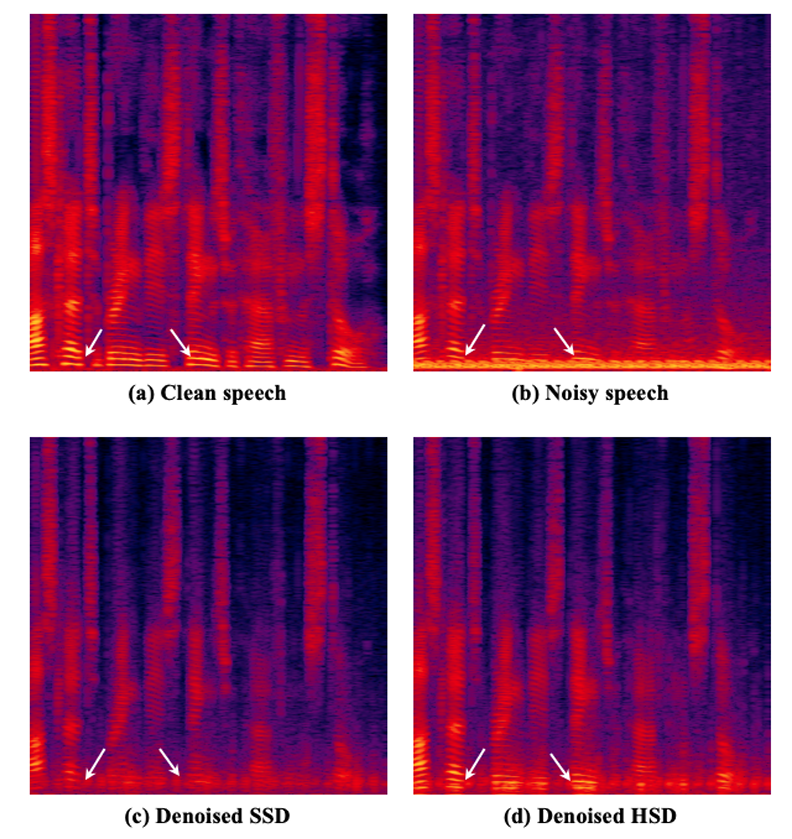
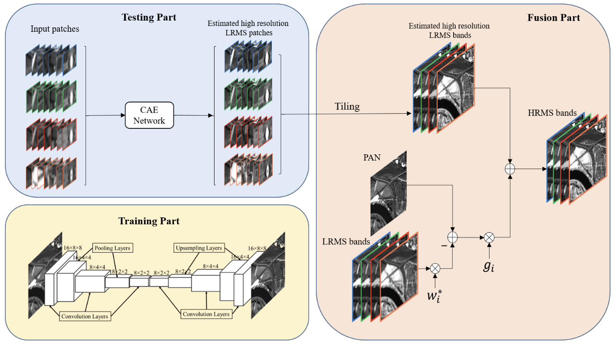
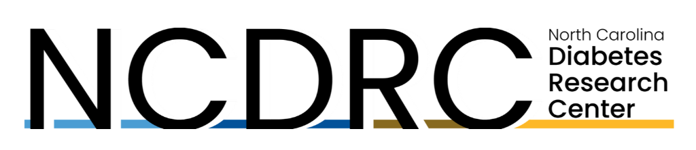
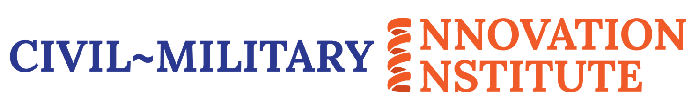

Overview
My projects focus on translating AI and signal processing methods into practical tools for health and biomedical applications. This includes ultrasound guidance, Doppler and echocardiography analysis, voice and breathing-based monitoring, smartphone and real-time AI deployment, and earlier work in multispectral image fusion and remote sensing.
Featured Research Projects
AI-Guided Ultrasound and Operator Support

Automated Venous Gas Emboli Detection

Building deep learning systems for automatic grading and detection of venous gas emboli from Doppler ultrasound audio and echocardiographic data, including real-time deployment.
- Deep Learning-Based Venous Gas Emboli Grade Classification in Doppler Ultrasound Audio Recordings [Article] [Code]
- Free Software for Automated Grading of Venous Gas Emboli in Doppler Ultrasound [Article] [Code]
- Development of a graphical user interface for automatic separation of human voice from Doppler ultrasound audio in diving experiments [Article] [Code]
Speech and Audio Biomarkers for Health

Investigating speech, breathing, and acoustic biomarkers for digital health, including respiratory stress, edema-related signatures, and enhancement methods for noisy medical audio.
Multispectral Image Fusion and Remote Sensing

Earlier work focused on deep learning and optimization-based methods for multispectral image fusion, pansharpening, and remote sensing image analysis.
Selected Student and Mentored Projects
Deep Learning for Diabetic Retinopathy Detection
Mentored student work on detection of five stages of diabetic retinopathy with an emphasis on real-time deployment on smartphones.
Abrams Scholars project
Speech Enhancement for Hearing-Impaired Patients
Mentored a project focused on deep learning-based speech enhancement and real-time smartphone deployment for hearing-related applications.
Abrams Scholars project
Real-Time Automated Bubble Detection in Echocardiography
Undergraduate research project evaluating real-time automated bubble detection workflows for echocardiographic imaging.
Turtle Ultrasound GUI and Decompression Analysis
Developed and mentored work on a graphical user interface for analysis of turtle ultrasound data and decompression sickness-related imaging studies.
Instantaneous Heart Rate from Doppler Ultrasound Audio
Research project focused on extracting heart rate information from Doppler ultrasound audio recordings using signal processing and machine learning.
Research Sponsors

